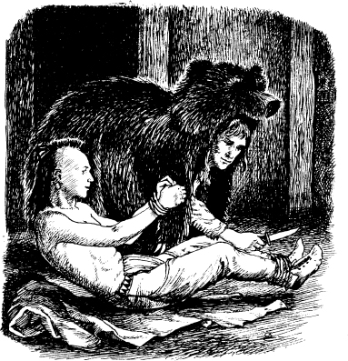

10
隻熊
梅格亞看著鄧肯跟艾莉絲。渠大笑，慢慢走向兩個人。突然之間，隻熊已經走入屋內。隻熊 быстро抓住梅格亞。梅格亞動彈不得。渠轉頭都唔得。
鄧肯衝向休倫人。渠綁住梅格亞雙手。然後渠綁住梅格亞雙腳。梅格亞想說話，但係鄧肯塞咗塊布入渠口內。
鷹眼除咗隻熊個頭。渠講：「咱需要快啲走。」渠對艾莉絲講：「艾莉絲，你自己披件毯。你裝扮成隻病咗嘅休倫女人。噉你就離開到休倫人個村落。」
鷹眼將隻熊個頭重新戴上。艾莉絲將塊毯披喺自己頭上面。鄧肯抱住艾莉絲離開個山洞。鷹眼跟住喺後面。
休倫人酋長喺山洞外。
鄧肯講：「我帶走隻病咗嘅女人。我聽日會帶渠嚟你屋企。」
鷹眼、鄧肯跟艾莉絲離開咗個村落。然後鷹眼帶住鄧肯跟艾莉絲去咗條小徑。
鷹眼同渠哋講：「呢條小徑通去條小河。」渠講：「你哋會見到座山。特拉華人村落喺座山附近。你哋喺特拉華人村落會安全。」
鄧肯問：「你打算點？」
鷹眼講：「我需要返去搵安卡斯。」

個村落好暗。啲休倫人已經返晒屋企。渠哋瞓咗覺。鷹眼喺度搵安卡斯。個偵察兵著住隻熊皮。渠睇晒所有建築物。然後渠喺間屋外面見到兩個男人。渠哋係守衛。但係渠哋瞓咗覺。鷹眼靜靜雞入咗間屋。
安卡斯瞓喺地下。渠雙手雙腳俾繩索綁住。鷹眼除咗隻熊個頭。安卡斯笑咗。
渠靜靜雞講：「鷹眼。」

鷹眼將安卡斯雙手雙腳啲繩索解開。然後渠除咗隻熊皮。安卡斯跟鷹眼好快咁逃離個村落。
鷹眼講：「我哋去特拉華人村落。」
安卡斯講：「好！」渠講：「特拉華人係我阿公啲仔女。渠哋會幫我哋。」
第二朝，啲休倫人去搵安卡斯。渠哋想殺死渠。渠哋搵到隻熊個頭。但係渠哋搵唔到個莫希乾人。
然後渠哋去咗山洞。渠哋搵到個死咗嘅女人。但係渠哋搵唔到艾莉絲。
渠哋搵到梅格亞。渠雙手雙腳俾繩索綁住。塊布塞咗喺渠口內。
啲休倫人將梅格亞雙手雙腳啲繩索解開。渠哋將塊布由渠口內攞走。
梅格亞好嬲。渠大叫：「立馬殺死個莫希乾俘虜！」
其中一位酋長講：「渠已經走咗。」
梅格亞嬲到叫。渠衝出山洞。